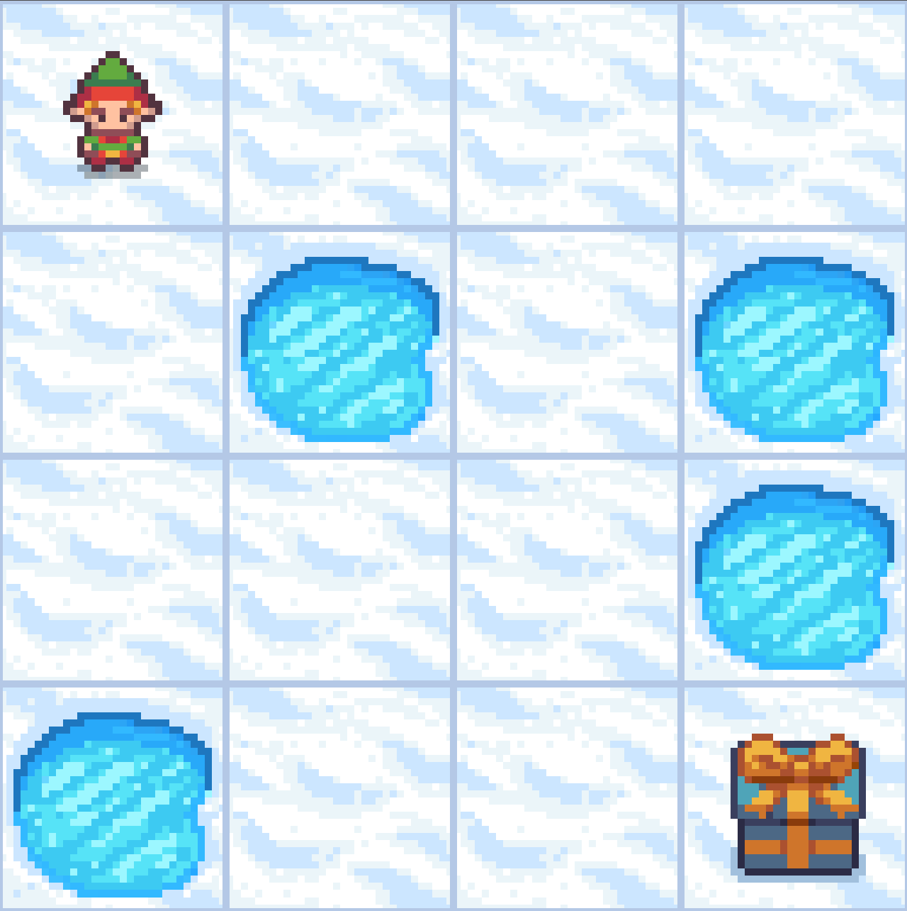
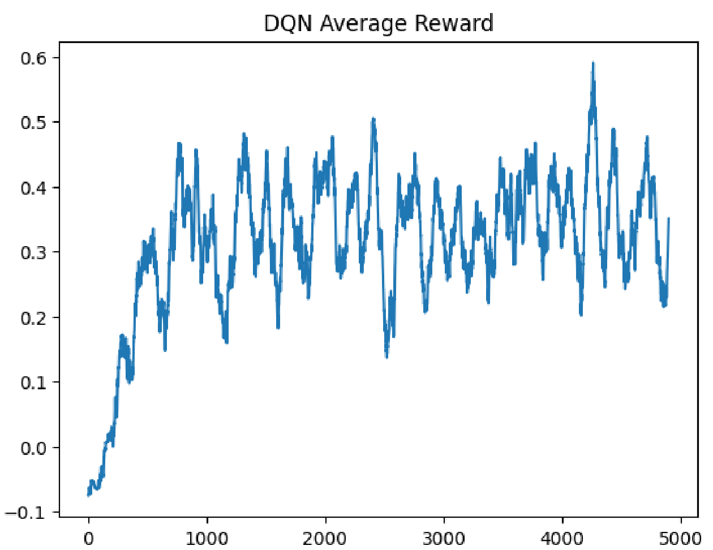
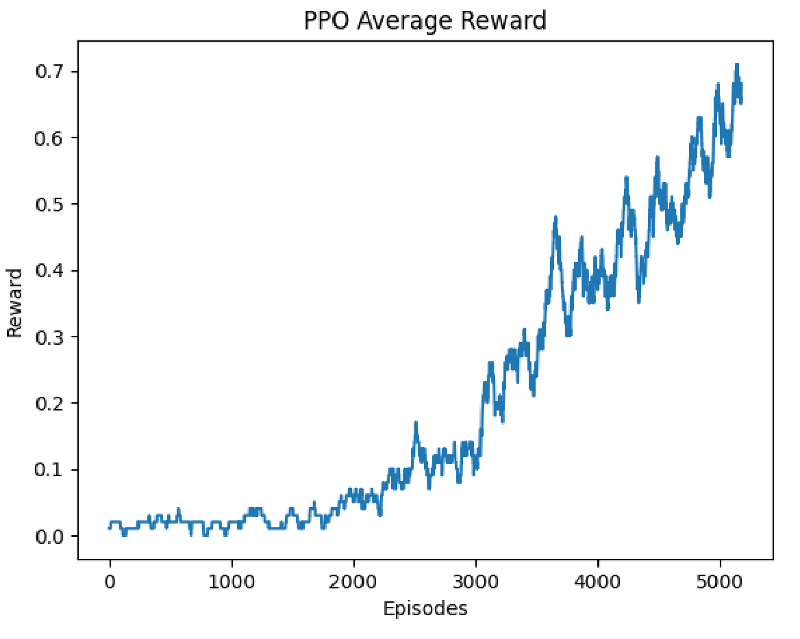

PROJECT_03 // Reinforcement Learning
Reinforcement Learning on FrozenLake: DQN vs PPO
I trained two kinds of AI agents to cross a slippery frozen lake, then compared how they learned.
CASE_STUDY.TXT

# overview
This was my final project for my AI course (CPSC 425). The goal was to implement two different reinforcement learning algorithms on the same problem and compare them: a Deep Q-Network (DQN), which I wrote myself in PyTorch, and Proximal Policy Optimization (PPO), using Stable-Baselines3. I measured each by how often it reached the goal, how stable its learning was, and how long it took to train.
# the problem
FrozenLake is a 4x4 grid. The agent starts in one corner and has to reach a goal in the opposite corner without stepping into a hole. It sounds simple, but two things make it hard to learn:
- The ice is slippery. When the agent picks a direction, it only moves that way a third of the time; the rest of the time it slides sideways. The same action can lead to different outcomes.
- The reward is sparse. The agent gets +1 only on reaching the goal, so early on it receives almost no feedback about whether it is doing well.
# approach
To give the agents a bit more signal, I used reward shaping: a small penalty on every step to discourage wandering, and a negative reward for falling into a hole, alongside the +1 for the goal.
- DQN (built from scratch). The state is one-hot encoded and fed into a small network (one hidden layer of 32 units) that outputs a Q-value for each of the four moves. It uses experience replay (a 4,000-step memory), epsilon-greedy exploration that decays over training, a discount factor of 0.99, and mini-batch updates with Adam.
- PPO (Stable-Baselines3). A standard MLP policy trained for 100,000 timesteps, with a Monitor wrapper to log rewards for plotting.
class DQN(nn.Module):
def __init__(self):
super(DQN, self).__init__()
self.fc1 = nn.Linear(state_size, 32)
self.fc2 = nn.Linear(32, action_size)
def forward(self, x):
x = torch.relu(self.fc1(x))
return self.fc2(x)
ppo_env = Monitor(gym.make("FrozenLake-v1", is_slippery=True))
ppo_model = PPO("MlpPolicy", ppo_env, verbose=0)
ppo_model.learn(total_timesteps=100000, callback=callback)Full code: view the notebook on GitHub, open it in Colab, or download the .ipynb.
# results
Both agents learned to solve the lake, but they got there differently. The DQN improved quickly, within the first thousand episodes or so, then stayed noisy for the rest of training. PPO sat near zero for roughly its first 2,000 episodes, then climbed steadily and smoothly.


In testing, the trained agents succeeded 74.2% of the time. That turns out to be the ceiling: working out the best possible policy with dynamic programming over the environment's slippery transition probabilities gives a maximum success rate of 74.22% within Gymnasium's 100-step limit, so no agent can do better on this map. Because both algorithms reached it, the map is too easy to separate them on success rate alone.
The real difference was speed. PPO finished in about 2 minutes versus about 22 for my DQN, likely because my DQN updates its network after every single step and builds its training targets in a Python loop, while Stable-Baselines3 batches its updates.
# challenges
- Noisy learning signal. Because the ice is random, even a perfect policy fails about a quarter of the time, so reward curves never settle. I had to learn to read trends in noisy graphs instead of expecting a clean line.
- Exploration vs exploitation. Deciding how quickly the DQN should stop acting randomly and start trusting what it had learned.
- Reward tuning. Finding step and hole penalties that discouraged wandering without overwhelming the +1 reward for reaching the goal.
- Wrapping the environment for PPO. Getting the environment, the Monitor wrapper and a custom callback to cooperate so rewards could be logged and plotted.
# what I'd do differently
- Move to the larger 8x8 map. Since both agents hit the same ceiling, the 4x4 lake is too simple to show which algorithm is really better.
- Add a target network to the DQN, which should reduce its instability, and vectorize its updates to close the training-time gap.
- Put both agents on the same reward scale. The DQN curve includes the shaping penalties, so I compared the agents by success rate rather than by their reward curves.
- If I continued with one algorithm, I would pick PPO for its speed and smoother learning.
END TRANSMISSION